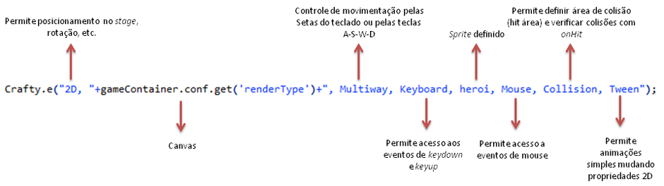

- Engine escrita em JavaScript para o desenvolvimento de jogos em HTML5;
- Compatível com Canvas e DOM (Document Object Model);
- Vantagens:
- Compatibilidade cross-browser em grande parte das features
- Tamanho de arquivo: 88KB na versão minified;
- Modular;
- Open-source;
- Baseado em modelo de entidades, e coleção de componentes, semelhante a classes;
- Seletor de entidades semelhante ao seletor do jQuery;
- Suporta o uso de tiles e sprite maps
- Extensível: http://craftycomponents.com/
- Vantagens (cont.):
- Recursos incluídos no core da engine, sem a necessidade de bibliotecas externas:
- Asset Loading;
- Sprite Map;
- Áudio ();
- Modelo isométrico;
- Colisões;
- etc.
- Documentação: http://craftyjs.com/api/
Introdução: CraftyBoilerplate
- Boilerplate: conjunto de arquivos que formam um modelo base para facilitar o desenvolvimento de alguma aplicação;
- Boilerplate ≠ Framework
- Boilerplates funcionam como uma sugestão de estrutura para iniciar seu projeto, porém, não têm a intenção de fornecer um conjunto de códigos e funcionalidades específicas.
- O CraftyBoilerplate oferece uma estrutura de diretórios e arquivos padrões para iniciar o desenvolvimento de jogos através do Crafty. Além disso, ele traz bibliotecas adicionais para facilitar o desenvolvimento (Modernizr, Backbone, Underscore, RequireJS, jQuery)
Baixando o CraftyBoilerplate
- src: arquivos .js
- components: arquivos de componentes
- entities: arquivos que definem as entidades
- interface: arquivos com entidades relativas à interface do jogo
- scenes: declaração das cenas
- libs: bibliotecas
- config.js: configuração do jogo
- game.js: arquivo principal do jogo
- sprites.js: definição dos elementos do jogo
- web: imagens e folhas de estilo
- index.html: container do game
- Modernizr: identifica suporte do navegador a recursos de HTML5/CSS3;
- Backbone: para criação de modelos semelhantes a classes (neste caso, é usado para encapsular as entidades);
- Underscore: coletânea de funções, dependência para o Backbone;
- RequireJS: carregamento sob demanda e assíncrono de outros arquivos .js;
- jQuery.
- Baseado no clássico arcade Space Invaders
- Canvas, mas alguns elementos em DOM (principalmente textos)
- Cenas (telas): Start Screen, Main, Game Over Screen
- Movimentos: controle por teclado, enterframe
- Sprites: tiles, criação de entidades e animações
- Detecção de colisões
- Áudio
- Eventos customizados
- Score: armazenamento e persistência de dados com IndexedDB
Configurações iniciais: index.html
Criando os sprites: /src/sprites.js
- Define uma "classe" denominada Sprite;
- Define uma ou mais coleções de sprites (tiles) do jogo.
- Sprites a serem utilizadas:
Criando os sprites: /src/sprites.js (cont.)
- Criando o stage:
Crafty.init([Number width, Number height])
- Criando o elemento canvas:
Crafty.canvas.init()
- Requisição assíncrona de arquivos:
require(Array elements, Function callback);
- Configuração e inicialização de cenas:
Crafty.scene(String sceneName, Function init[, Function uninit])
- Entidades e componentes:
Crafty.e(String componentList)
- Componentes: semelhante a imports (ou também herança múltipla). Aumentam a funcionalidade da entidade, adicionando propriedades e métodos do componente à entidade. Exemplos de componentes: 2D, Multiway, Keyboard, Collision, SpriteAnimation.
- Criação de componentes customizados:
Crafty.c(String name, Object component)
Inicializando o jogo: /src/game.js
Inicializando o jogo: /src/game.js (cont.)
Inicializando o jogo: /src/game.js (cont.)
Inicializando o jogo: /src/game.js (cont.)
- Listener do Crafty para eventos:
.bind(String event, Function callback)
- Tratamento de colisões: definindo área de colisão -> precisão vs. complexidade
- Controle de teclado
- Disparando eventos customizados
Entidade - Herói: src/entities/heroi.js
Entidade - Herói: src/entities/heroi.js (cont.)

- Definindo a área de colisão: precisa criar os pontos que formam o polígono da imagem
new Crafty.polygon([31,2],[24,21],[14,29],[12,23],[10,27],[10,37],[12,39],[21,39],[25,41],[25,60],[38,60],[38,41],[42,39],[51,39],[53,37],[54,27],[51,23],[49,29],[39,21],[32,2])- Ao utilizar apenas
new Crafty.polygon(), ele cria por default uma área retangular. Mais simples, porém, menos preciso.
Entidade - Herói: src/entities/heroi.js (cont.)
.onHit(String component, Function hit[, Function noHit])
- Crafty também possui funções para disparar eventos:
Crafty.trigger(String eventName, * data)
- Evento disparado por trigger deve ser capturado por uma entidade através do
.bind()
- Evento customizado criado nativamente por JS (ex.:
document.createEvent(String type)) só pode ser capturado por .addEventListener()
Entidade - Herói: src/entities/heroi.js (cont.)
Entidade - Tiro: src/entities/tiro.js
Entidade - Tiro: src/entities/tiro.js (cont.)
- Carregando um novo sprite com a função do Crafty:
Crafty.sprite([Number tile], String url, Object map[, Number paddingX[, Number paddingY]])
- Animando com sprites:
.animate(String reelId, Number fromX, Number y, Number toX)
.animate(String reelId, Number duration[, Number repeatCount])
Entidade - Tiro: src/entities/tiro.js (cont.)
Entidade - Tiro: src/entities/tiro.js (cont.)
Entidade - Tiro: src/entities/nave.js
Entidade - Tiro: src/entities/nave.js (cont.)
Testando: /src/scenes/main.js
- Encapsulando a criação de textos e botões para o jogo
- Elementos DOM ao invés de 2D
- Movimento sprites sem animação:
.sprite(Number x, Number y, Number w, Number h)
- Modificando estilo:
.css(Object map) ou .css(String property, String value)
- As propriedades podem ser passadas em notação CSS ou JS (
text-align ou textAlign)
Testando: /src/scenes/main.js
Criação da cena principal: /src/scenes/main.js
- Instanciação das entidades
- Captura de eventos
- Score: persistência de dados(
Crafty.storage.open(String gameName), Crafty.storage.save(String key, String type, Mixed data))
Criação da cena principal: /src/scenes/main.js (cont.)
Criação da cena principal: /src/scenes/main.js (cont.)
Criação da cena principal: /src/scenes/main.js (cont.)
Criação da cena principal: /src/scenes/main.js (cont.)
Criação da cena principal: /src/scenes/main.js (cont.)
Criação da cena principal: /src/scenes/main.js (cont.)
Criação da cena principal: /src/scenes/main.js (cont.)
Criando a tela inicial: /src/scenes/start.js
Criando a tela final: /src/scenes/gameover.js
Crafty.audio.add(String id, String url)Crafty.audio.add(String id, Array urls)Crafty.audio.add(Object map)Crafty.audio.play(String id[, Number repeatCount[, Number volume]])Crafty.audio.stop([String id])- Listando os arquivos a serem carregados na lista de assets:
- Dentro da função moveTiro
- Resolver bug ao reiniciar o jogo depois de ter perdido o jogo anterior
- Otimizar o código: criar componentes para funcionalidade comuns, como movimentos
- - Já existe! Criei o component Tweener, disponível no site do CraftyComponents
- 48 arquivos, 11 pastas, ~7,9MB
- Tempo de desenvolvimento do jogo: ~60h
- Processamento: picos de 16% de uso de CPU
- Memória: ~30MB
- Nível de complexidade de desenvolvimento: Tenso ()